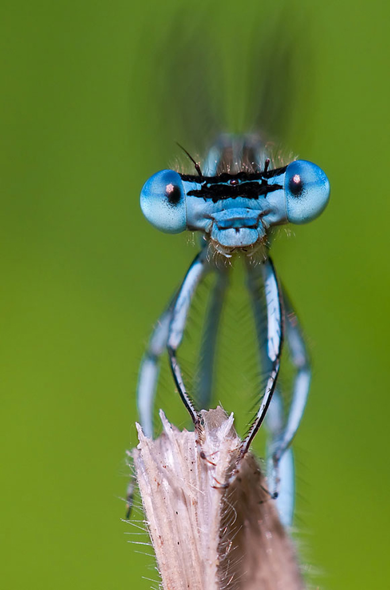
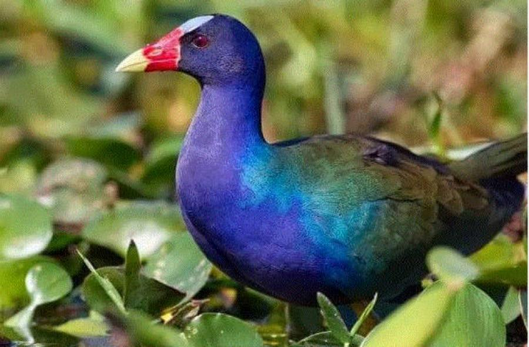
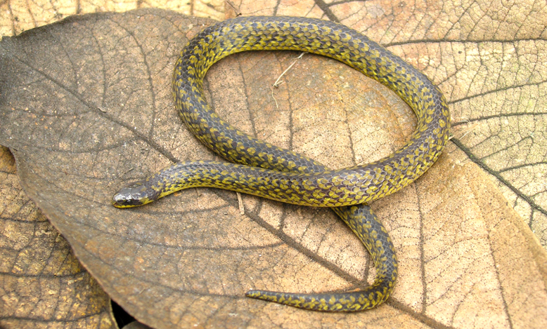
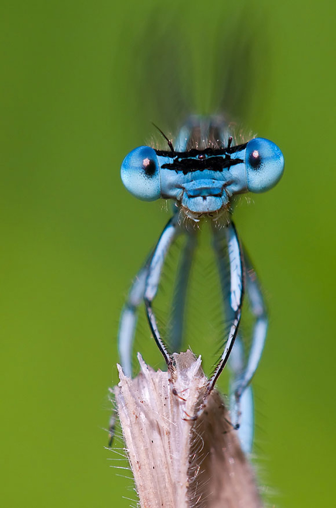
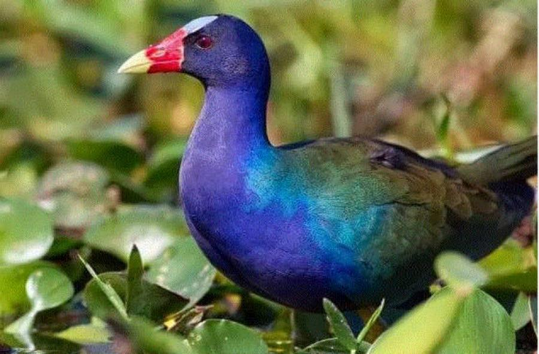
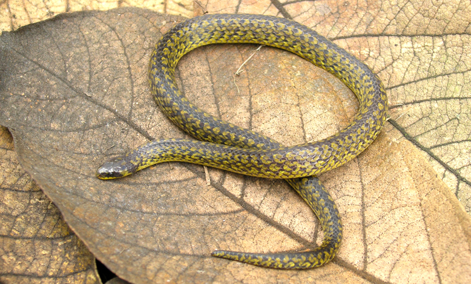

Especies
Fauna
Las especies mas reconocidas son los colibris, las tinguas, los caballitos del diablo, los patos turrios., la monjita amarilla, la serpiente sabanera y el gavilan maromero.
Mira fauna 




